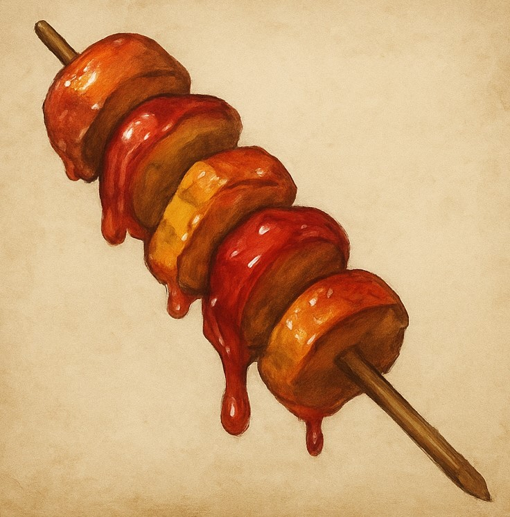
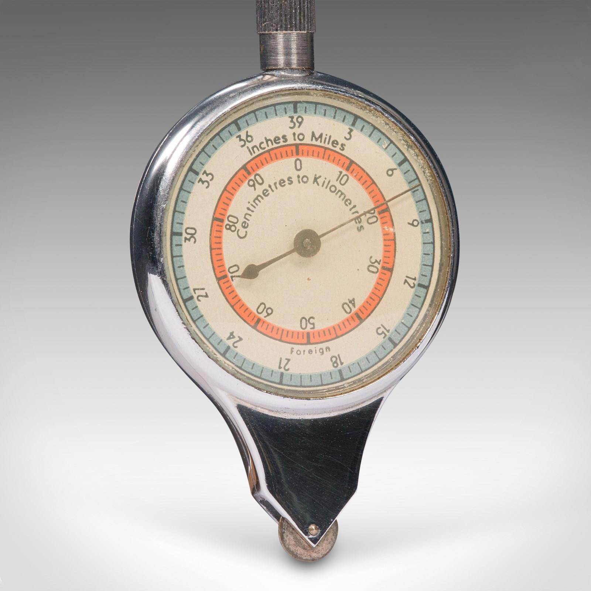
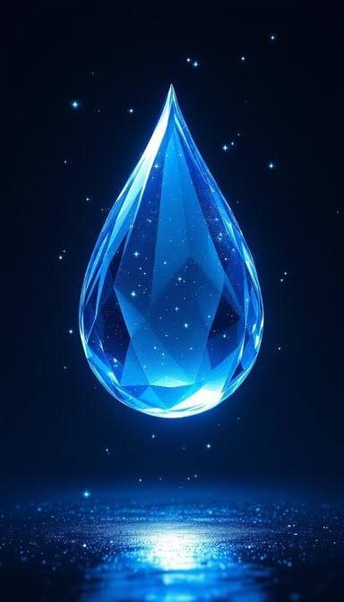
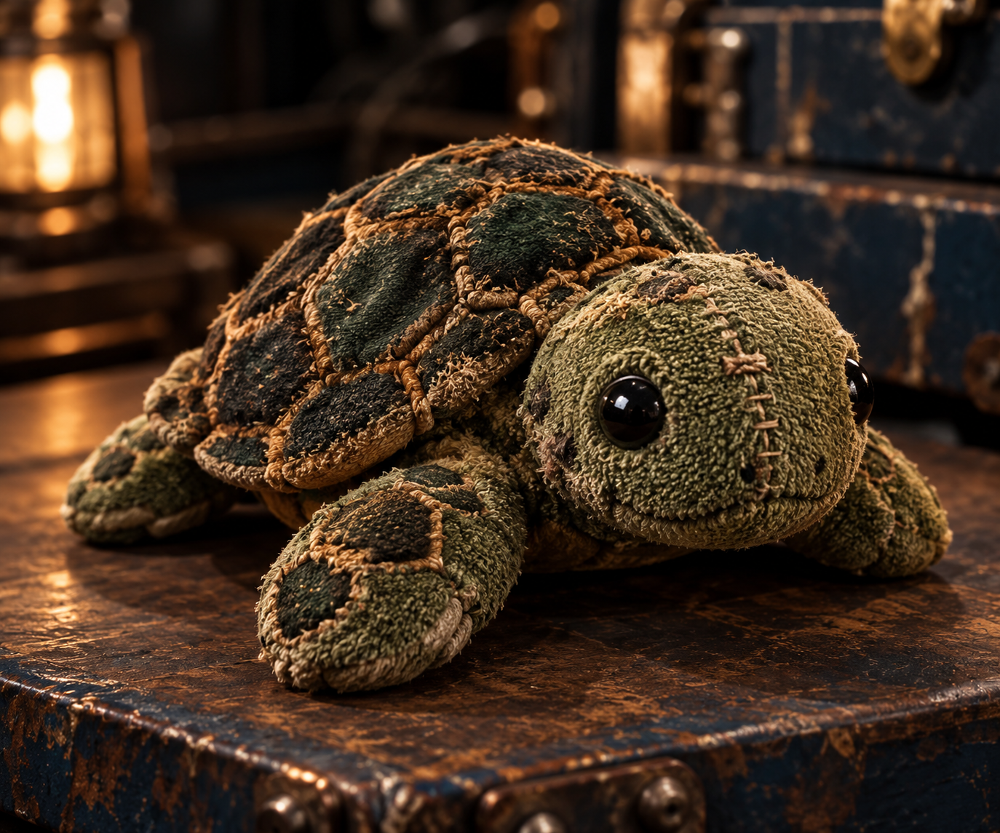
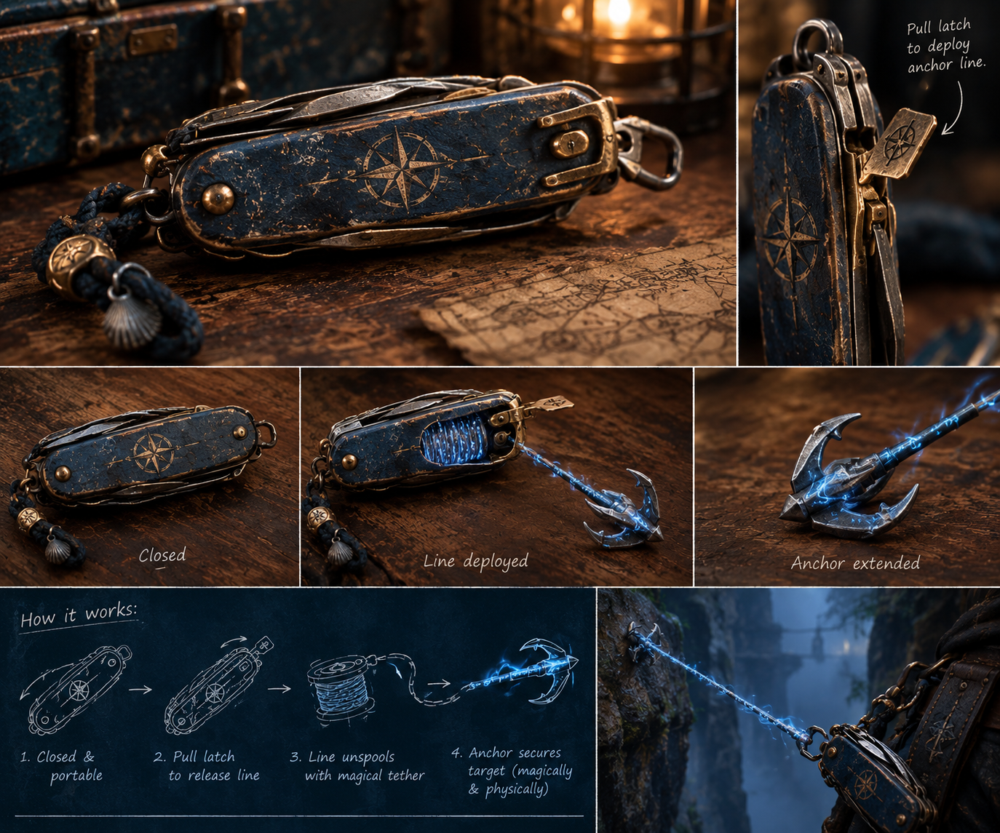
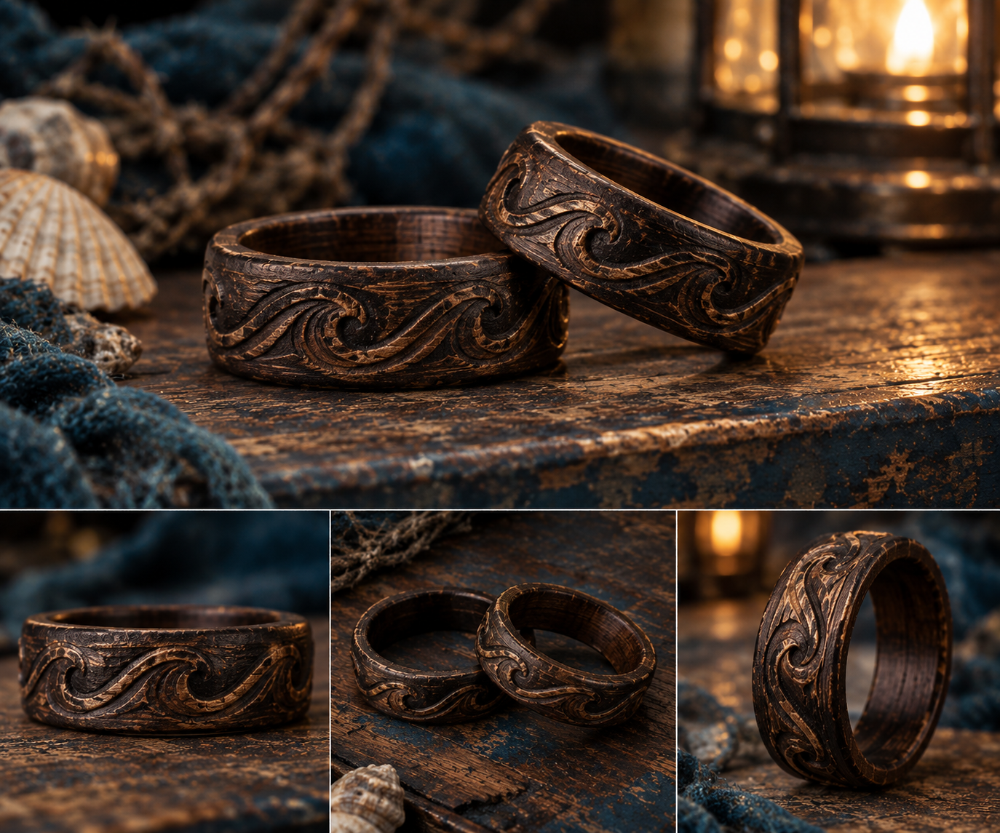
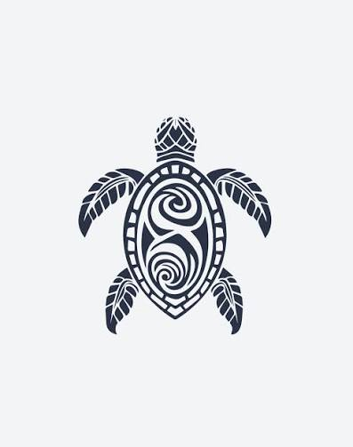

Gravemarch Specialities
Spirit Skewer

A market favorite in the narrow streets of Gravemarch, this glossy red-glazed kebab is made from alternating pieces of tart fruit and roasted root vegetables. The glaze—said to be made from crushed spiritberries and ember sap—gives off a faint shimmer under moonlight. Locals claim it “warms the eyes and clears the shadows,” though most travelers don’t realize just how literal that saying is.
Effects
Item Type: Rare Consumable Rarity: Uncommon (Varies by region) Effect: When you eat the Spirit Skewer, you gain Truesight (30 ft) and can see ethereal and invisible creatures for 2 hours. Additionally, faint whispers of lingering spirits may brush your thoughts during this time. The kebab loses its potency if not eaten within 24 hours of being glazed.
Player Items
Abyssal Compass

An ancient beautiful compass at first glance, but holds some magic of its own.
Effects
Item Type: Magic Item Rarity: Rare Effect: A compass whose needle doesn't point north. Instead, it points toward the nearest place of great magical significance.
Abyssal Tear

A teardrop-shaped crystal containing swirling black liquid.
Effects
Item Type: Magic Item Rarity: Rare Effect: can be used as a powerful spell component—or consumed to grant a character a strange temporary blessing, such as the ability to breathe underwater or communicate with sea creatures. Roll from the Necromancy tier list.
Buddy the Turtle

A worn, stitched turtle that reminds all who encounter him of the kindness of the world.
Effects
Item Type: Personal Item Rarity: Rare Original Owner: Claude Mbenga Effect: Adds +2 to Charisma and Persuasion rolls
Pocket Anchor

At first glance, it appears to resemble a swiss army knife.
Effects
Item Type: Personal Item Rarity: Rare Original Owner: Cami Ruther Effect: Pull the extension and it instantly becomes incredibly heavy, anchoring itself to whatever surface it touches. Pulling the attached cord retracts it back into its tiny form. Very useful for climbing, securing things, or stopping yourself from being swept away.
Wooden Rings

Two beautifully hand carved wooden rings with an ocean band around the center.
Effects
Item Type: Personal Item Rarity: Rare Original Owner: Norman Haines Effect: When worn the wearers can always find each other no matter their location, magical effect, or distance.
Turtle Tattoo

A simple turtle design.
Effects
Item Type: Personal Item Rarity: Rare Original Owner: Marion Vargas Effect: When applied to the body, gain +2 to Intimidation and Deception. Tattoo last for a week – 7 days in game